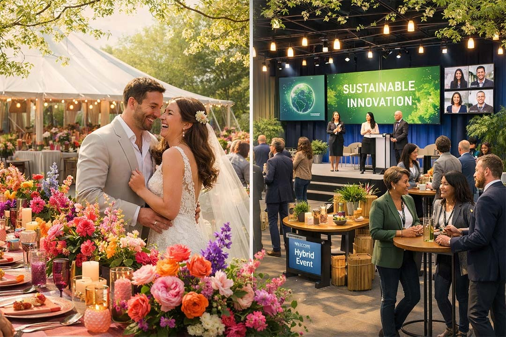

March 2026Momentum Across the UK Events Industry
This isn't just a busy month; it's a glimpse of what's becoming standard. On platforms like VenuesAndVendors.co.uk—the UK's intelligent events marketplace launching earlier this year—couples and planners discover venues and vendors through transparent pricing, verified listings, and seamless connections that cut through the noise. And as AI enablement sweeps the industry, tools like BookVenue.AI show how venues can unify operations—from real-time availability checks to smarter settlements—making the entire process feel effortless for everyone involved.
“It’s not about replacing the human touch — it’s about amplifying it.”
The Story of Intentionality in Weddings
Walk into any March bridal fair, and you'll feel the shift: couples aren't chasing trends anymore; they're chasing meaning. Hyper-personalisation tells their unique story—bespoke vows whispered in a ceremony that reflects shared values, immersive guest moments like audio memory books, or multi-day weekends where loved ones linger in secret garden settings.
Bold styling reigns: vibrant sunset palettes, sculptural florals, Bridgerton-inspired details, and fashion that evolves from day to night with dramatic sleeves or colourful suits.
Sustainability weaves through it all—not as a checkbox, but as low-key luxury that feels right. Historic estates and outdoor spaces thrive here, amplified by the new freedoms in ceremony locations. At VenuesAndVendors.co.uk, these elements come alive in filters and visuals, helping couples visualise their day without endless emails.
The Quiet Revolution in Corporate Events
On the corporate side, the narrative is about substance over show. Planners tell stories of events that connect people meaningfully: AI handling registration and agendas so humans focus on conversations; sustainability tracking that proves real impact; participatory formats with festival elements, interactive sessions, and hybrid baselines that include everyone.
Mental well-being features and custom branding make attendees feel valued, not just present.
The Sustainable Events Lounge this month spotlights these shifts—eco décor, green venues, and tools that predict needs before they're voiced. It's the kind of enablement that makes venues stand out: not just a space, but a partner in creating impactful, responsible gatherings.
A Forward-Looking Tale for Venues and Planners
Imagine a venue owner in March 2026: inquiries arrive at midnight, and an AI assistant—trained on their brand voice—replies warmly, suggests packages aligned with the latest trends, and books a virtual tour. The owner wakes to qualified leads, not a backlog.
Operations run smoother with predictive insights, dynamic pricing, and automated workflows. Guests leave raving about personalised touches—lighting that adjusts to the mood, welcomes that feel bespoke.
This is the quiet transformation happening now. Tools inspired by platforms like BookVenue.AI and broader AI enablement in the event industry let venues focus on what they do best: creating spaces where memories are made. It's not about replacing the human touch—it's about amplifying it, so the story of every wedding toast or corporate breakthrough feels even more powerful.
March 2026 is your chapter in this evolving story. Trends are set, events are happening, demand is rising. Embrace the intentional, the sustainable, the immersive—and watch your venue become part of countless meaningful moments.
Explore directories like VenuesAndVendors.co.uk to find aligned venues, suppliers, and inspiration—filter by trend, location, or capacity for the perfect fit. What's your favourite part of this month's energy? Share in the comments or start discovering today!